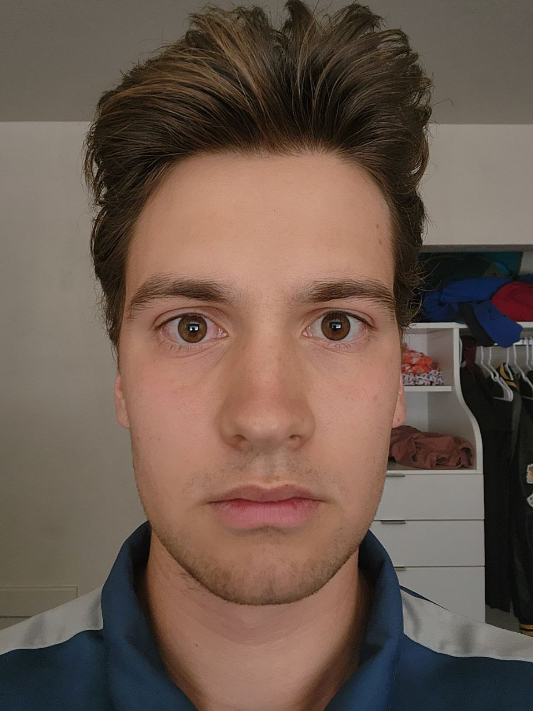

As a kid, I watched the entertainment industry grow rapidly - movies and video games would only become more advanced with time. Specifically, video games became the way to interact with about half of the group of my friends as we all grew and started spending less time at the same playground, which eventually bored us. We spent way too many years playing different games until I found myself getting tired of it - this is when my curiosity came into place. I started wondering about how digital visual things were created, such as objects, characters, and their animations. What if I want to start bending things to my will and the vision I have for them? With that question in mind, I started trying to develop my own online game. At the time, all I did was make decisions and spend money on services that would give me game-ready results like virtual cars, houses, etc. However, the problem with being in the position where I didn't create things myself was that those paid online strangers, most of the time, didn't manage to satisfy my expectations. That's when I decided to take everything into my own hands by learning and understanding how the process of 3d modeling, animation, and even simulation works. Right now, I am hoping to use it to make a living out of it, but it's about something bigger than just money. Eventually, it will become about designing a storytelling product whose characters' actions in an imaginary world would inspire real people to try to bring change to the real world.
